Tudo fica na internet: você entra com e-mail e senha em qualquer computador ou celular, e seus dados ficam guardados na sua conta. Não precisa instalar nada.
A) Crie sua conta. Na tela de entrada, clique em Criar conta, coloque seu nome, e-mail e uma senha, e escolha se quer receber e-mails das aulas (👍 ou 👎). Vai chegar um e-mail de confirmação: clique no link (veja também o spam). Pronto, cada conta tem o seu próprio progresso, histórico e preferências.
Lembrar este aparelho: deixe marcado para não precisar digitar a senha de novo. Deixe o navegador salvar a senha: no celular, ele preenche com a sua digital ou o seu rosto. Esqueceu a senha? Use "Esqueci minha senha".
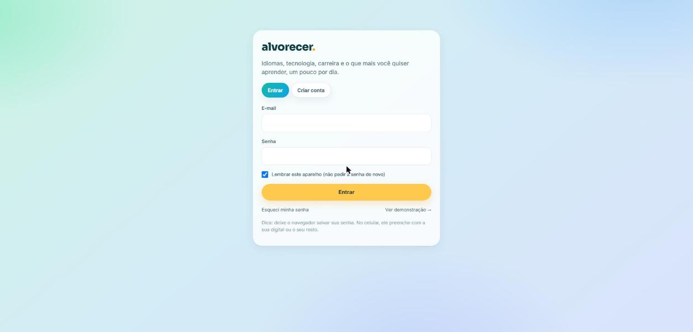
Na primeira entrada, o site te conhece (dá pra pular o nivelamento e começar do zero): nome, o que quer aprender, idiomas e nível, como prefere aprender, tempo por aula, duração da conversação e interesses. Dá pra refazer depois em Ajustes → Nivelamento e preferências.
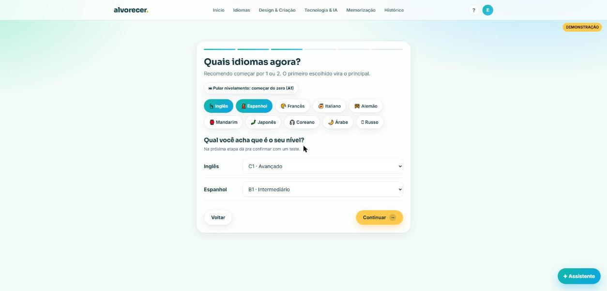
B) Ligue o IAlvorecer (grátis). Entre em aistudio.google.com com sua conta Google → Get API key → Create API key. Cole a chave no cadastro inicial ou em Ajustes → Chave do Gemini e clique em Testar IA.
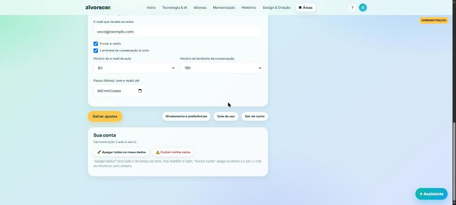
C) E-mails (só para quem administra o site, uma vez): no repositório alvorecer-dados do GitHub → Settings → Secrets and variables → Actions, crie GMAIL_APP_PASSWORD (senha de app do Gmail, em myaccount.google.com/apppasswords) e SUPABASE_SERVICE_KEY (Supabase → projeto alvorecer → Settings → API Keys → Secret keys). Depois disso, cada pessoa escolhe em Ajustes se quer receber e em que horários.
Sua conta: em Ajustes você pode sair, apagar todos os seus dados (recomeçar do zero) ou excluir a conta (apaga tudo e o seu e-mail do IAlvorecer).
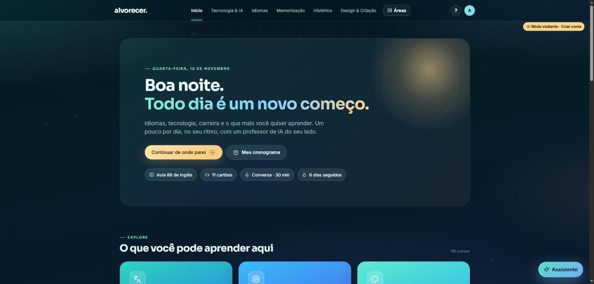
Na aba Idiomas ficam o seu curso principal, as tarefas de hoje e o botão Ver cronograma, com as próximas 4 semanas: qual aula cai em cada dia, as revisões, as conversas, os testes de sexta e quando deve chegar a prova de nível.
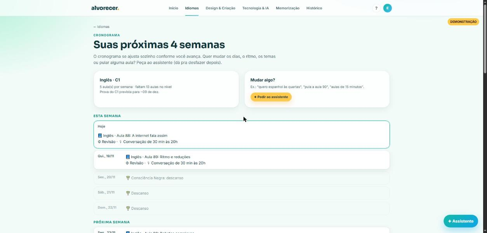
O botão ✦ Falar com o IAlvorecer (canto inferior direito) tira dúvidas e faz mudanças por você. Exemplos: "quero espanhol às terças e quintas", "pula a aula 90", "quero aulas de 15 minutos", "pausa os e-mails até segunda", "reinicia o curso de inglês", "apaga meu histórico". Ele mostra o que vai mudar e só aplica quando você clicar em Aplicar. Se se arrepender, use ↶ Desfazer (no chat ou em Ajustes). Dá para desfazer várias vezes seguidas. Ele não mexe no sistema do site, só nos seus estudos.
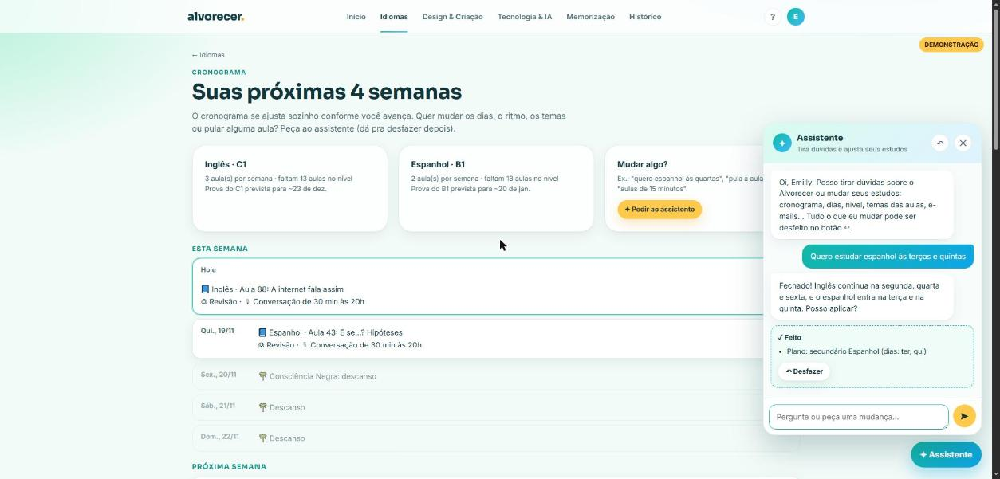
O menu do topo tem sempre Início, Tecnologia & IA, Idiomas, Memorização e Histórico, mais a sua área de interesse e o botão ▦ Áreas. Nele você troca de área (Design & Criação, Saúde/Treino/Nutrição, Negócios & Marketing, Engenharia & Elétrica, Finanças, Mente & Bem-estar) ou abre Seu Alvorecer.
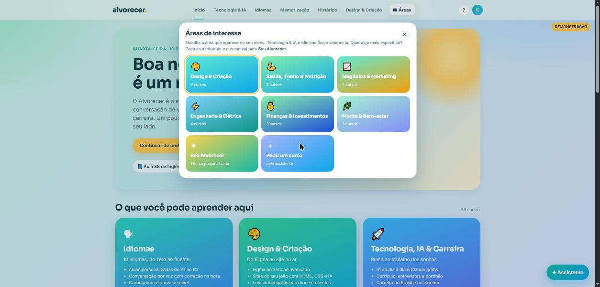
Seu Alvorecer guarda os cursos personalizados. Peça ao IAlvorecer, por exemplo "quero um curso de Excel do zero": ele monta o curso, você confere e clica em Aplicar. Depois é só estudar como qualquer outro curso. Para excluir, use a 🗑 no card (dá pra desfazer). Conteúdo adulto, perigoso, ilegal ou antiético é sempre recusado.
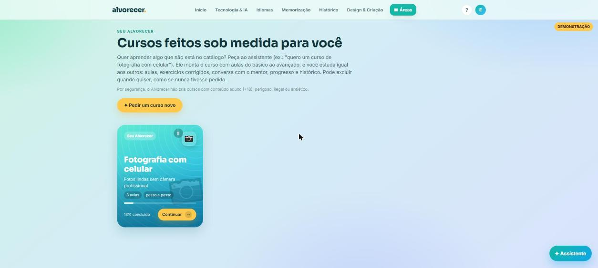
Idioma das aulas: em Ajustes você escolhe o idioma padrão das aulas e do IAlvorecer (português, inglês ou espanhol). Na página de cada curso tem o botão PT / EN / ES para mudar só aquele curso.
Em Tecnologia & IA → Mentoria de carreira você conversa com o IAlvorecer (por texto ou voz) sobre o seu trabalho atual, o salário que quer e os seus sonhos. Ao encerrar cada sessão, ele atualiza o seu plano: agora (ex.: uma vaga remota ganhando melhor), em 1–2 anos e o sonho (ex.: morar nos EUA ou no Japão), com próximos passos para marcar, ações da semana e cursos recomendados.
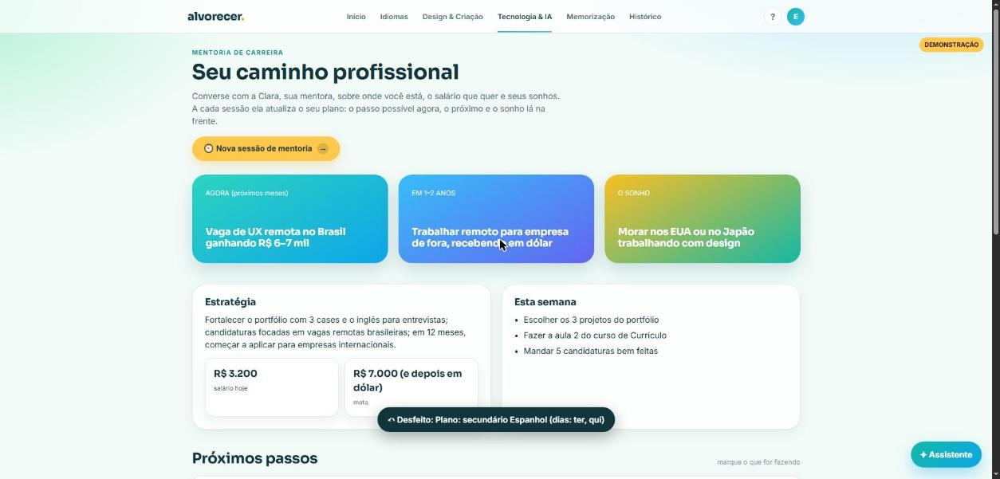
LinkedIn e vagas: na mesma página, cole o texto do seu LinkedIn (perfil → Mais → Salvar como PDF → copie o texto). O IAlvorecer passa a usar isso, e em Vagas para você aparecem buscas prontas no LinkedIn, Gupy, Indeed e sites internacionais. O LinkedIn não permite conexão automática, por isso o texto é colado.
Jeito 1: abra o idioma em Idiomas e clique em Tornar principal. Jeito 2: em Ajustes → Plano de estudos, escolha o idioma principal, o secundário e os dias do secundário. Jeito 3: peça ao IAlvorecer.
Trocar de idioma não apaga nada: cada idioma guarda seu nível, suas aulas e seus erros, e você pode voltar quando quiser.
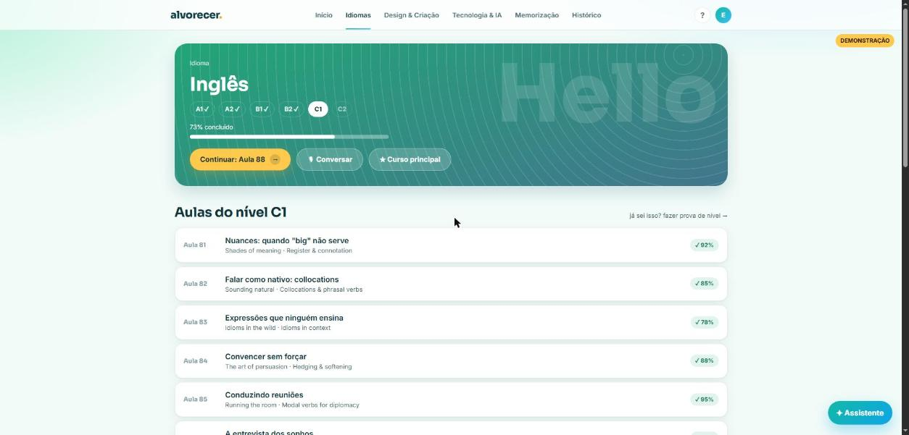
Tudo o que você fez fica salvo no repositório alvorecer-dados. Nunca é preciso recomeçar o projeto.
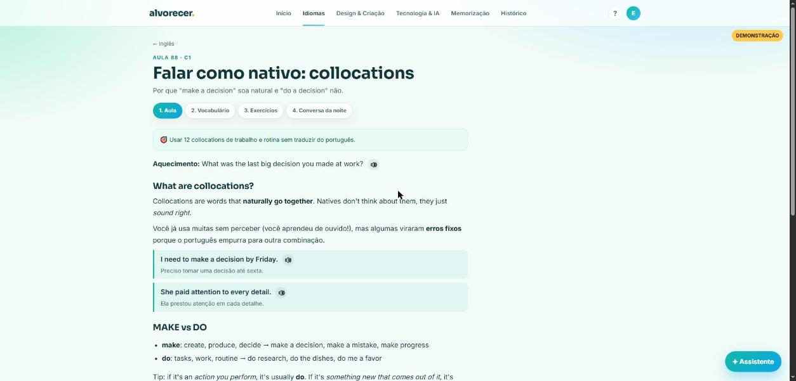
Na aba Design & Criação você encontra Figma do zero ao avançado, IA, HTML e CSS, Arte com IA, Design para todos, Loja virtual sem gastar, Criatividade, Projetos criativos com ferramentas grátis, Design visual, Branding, UX com IA e Design como negócio. As aulas práticas são passo a passo e já trazem prompts prontos para colar no Claude grátis.
Loja Modelo: um e-commerce grátis (vitrine, carrinho, frete e pedido pelo WhatsApp ou link de pagamento). Para criar uma loja nova, para você ou para um cliente, abra github.com/emillydesign/loja-modelo → Use this template → dê um nome → Settings → Pages → main → Save. Depois é só editar loja.json e produtos.json com a ajuda do Claude. O curso "Loja virtual sem gastar" ensina tudo, incluindo quanto cobrar.
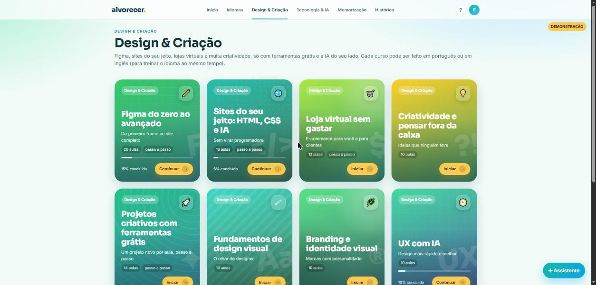
Ao terminar a aula, clique em Conversar sobre o tema (ou em Conversação, na tela inicial). Toque no 🎙, fale e toque de novo para enviar. O IAlvorecer responde em voz alta e corrige seus erros na hora (✏️). Clique em Encerrar aula para receber o relatório. A conversa completa fica no Histórico.
Use Chrome ou Edge no computador. No celular, Chrome (Android) ou Safari (iPhone). Use fone de ouvido. O "modo desafio" esconde o texto para treinar o ouvido.
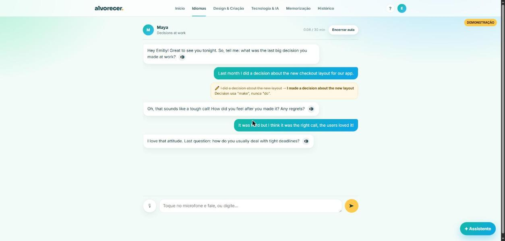
As palavras das aulas e os seus erros viram cartões, que voltam no dia certo (repetição espaçada). Em Memorização ficam também o teste da semana e o teste do mês. No Histórico estão a linha do tempo, todos os seus erros com a correção, o vocabulário e os níveis.
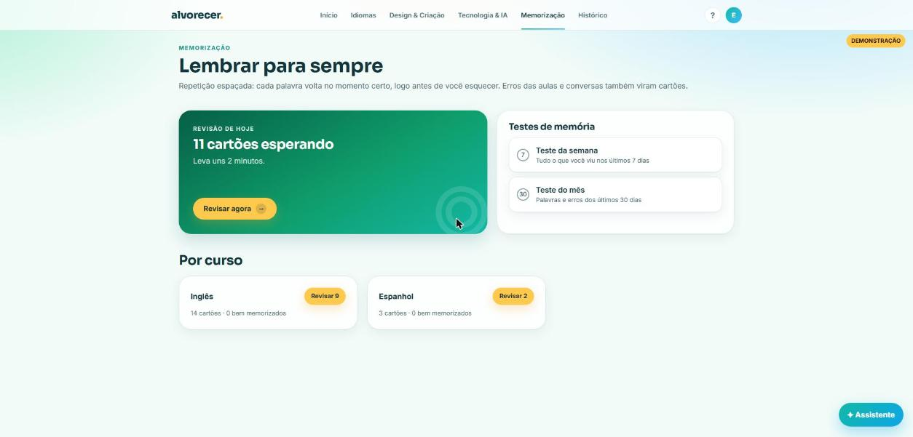
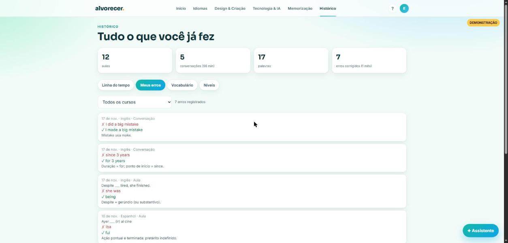
Abra o site no navegador do celular, entre com a mesma chave e use Adicionar à tela inicial. O site vira um app com barra de abas embaixo.